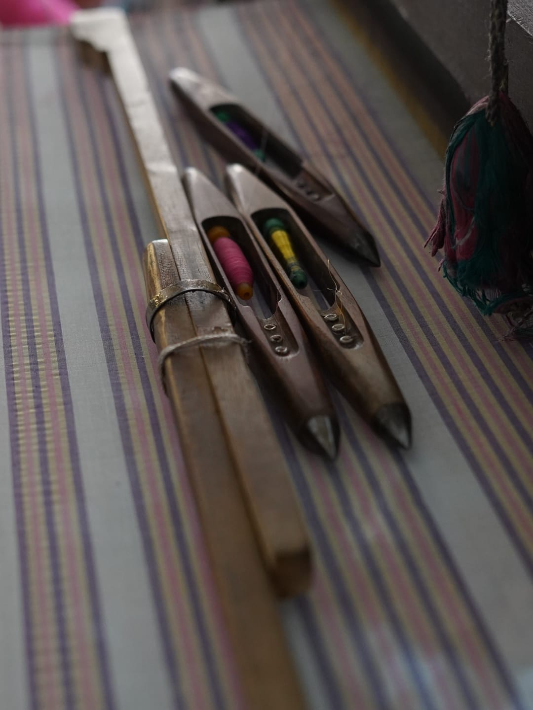
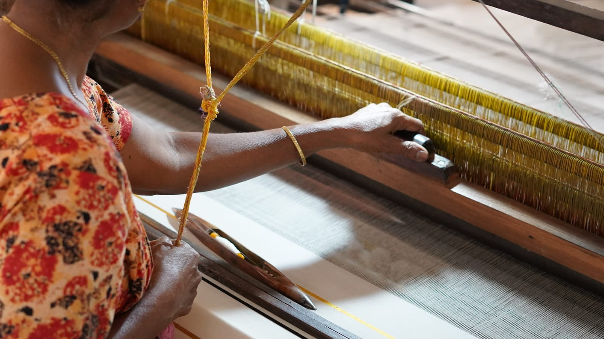
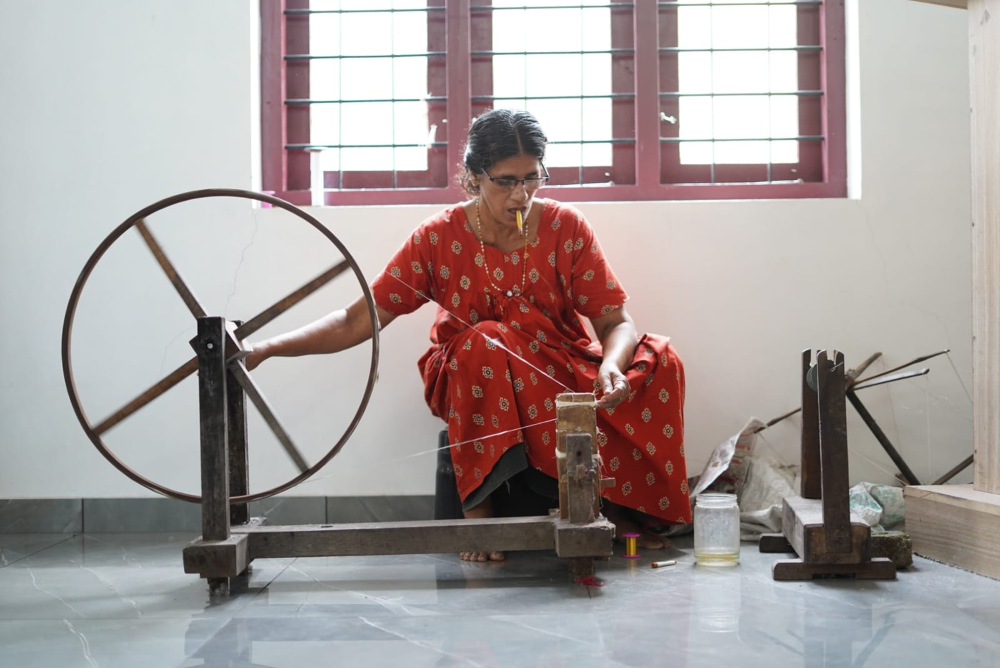
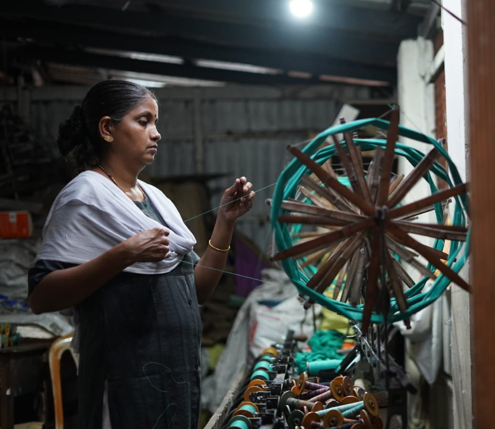
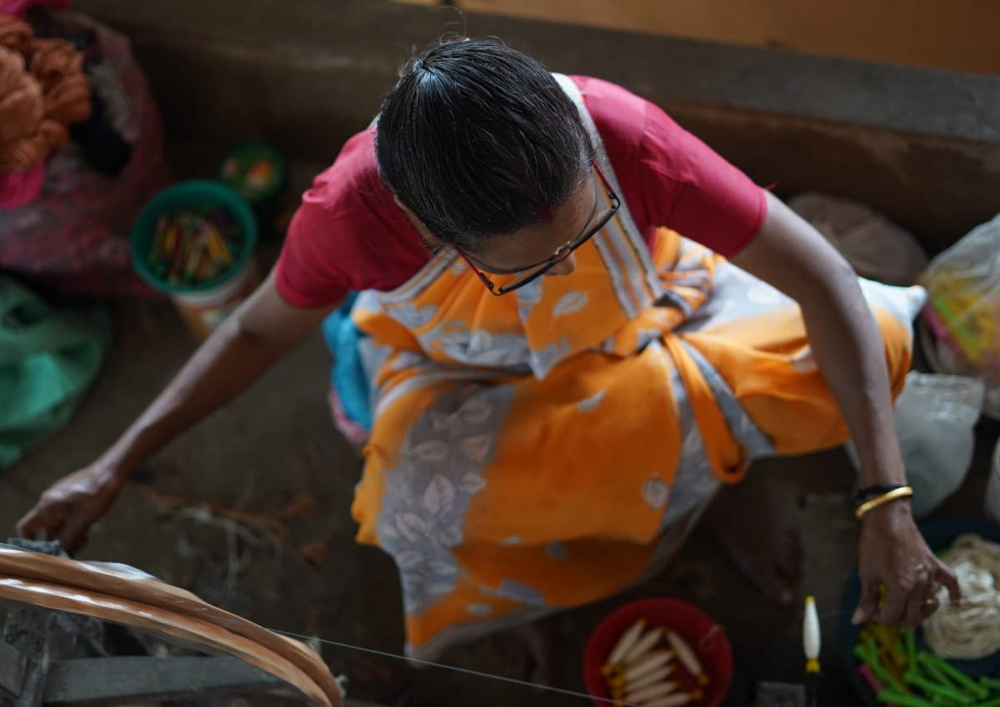

The Fabric of
Our Story
History, Heritage, and Community

History & Heritage
The roots of Chendamangalam weaving are intertwined with the princely history of Kerala. Originally patronized by the Paliath Achans, the hereditary prime ministers to the Rajas of Cochin, this craft was once a symbol of nobility and sacred ritual.
What began as a localized craft for royalty evolved into a lifeline for the community. In the mid-20th century, the formation of the Paravur Handloom Weaver's Co-operative Society transformed these scattered looms into a collective powerhouse. It was a move born of necessity—to protect the artisans from middlemen and to ensure that the "Chendamangalam Kaithari" (handloom) remained a mark of uncompromising quality.
"Our looms survived the shift to industrialization not because we were faster, but because we refused to lose the human touch."
Our Mission
To preserve and promote the authentic handloom traditions of North Paravur by providing a sustainable, dignified livelihood for our weavers. We aim to bridge the gap between ancient craftsmanship and contemporary global markets through innovation, fair wages, and the protection of our GI (Geographical Indication) status.
Our Vision
To see Chendamangalam recognized as a global hub for ethical luxury, where every thread tells a story of resilience. We envision a future where the next generation of artisans finds pride and prosperity in the rhythmic beat of the loom, ensuring that the song of the shuttle never goes silent.

The Heart of the Society
To understand our society, you must understand the hands that build it. We are a collective of over 200 artisans, each bringing a distinct personality to the floor:

The Guardians of the Warp
Our veteran weavers, many with over 40 years of experience, serve as the living libraries of the society. They can detect a tension flaw by the mere sound of the loom.

The New Guard
Younger members who are integrating modern design sensibilities with traditional Kasavu (gold thread) to ensure the craft stays relevant in the age of fast fashion.

A Culture of Kinship
The society isn't just a factory; it's a sanctuary. From the shared "chai" breaks to the collective effort of cleaning the looms after the 2018 monsoon floods, our strength lies in our "bubbly nature" and communal resilience.